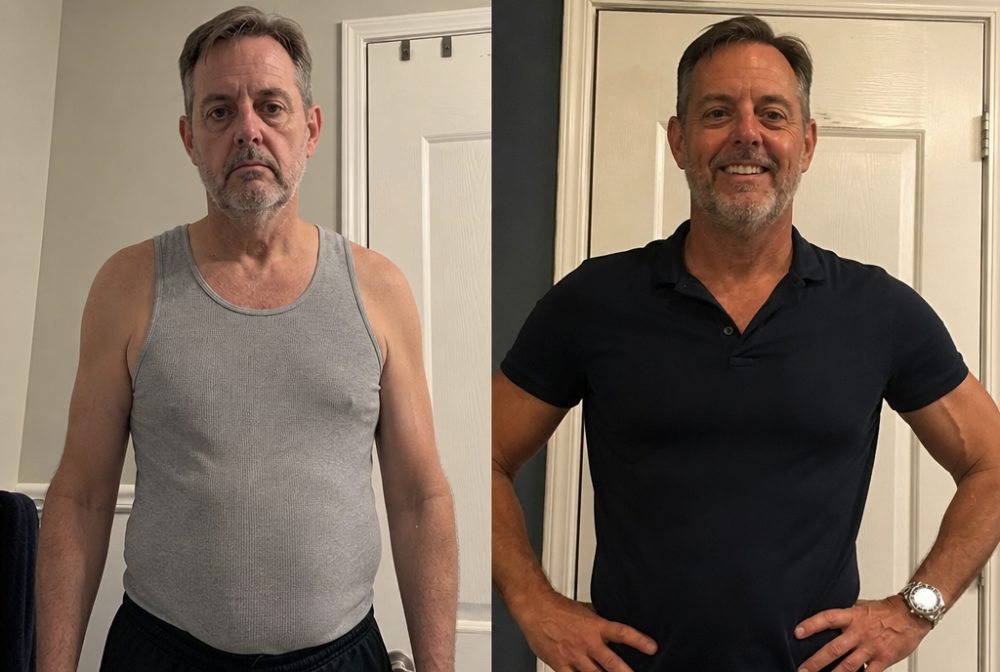
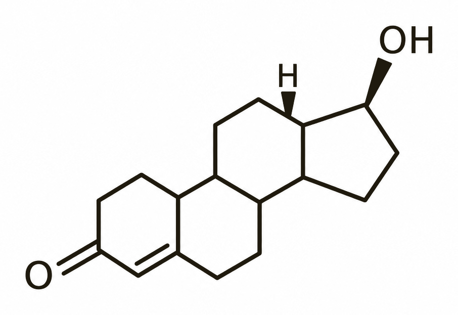
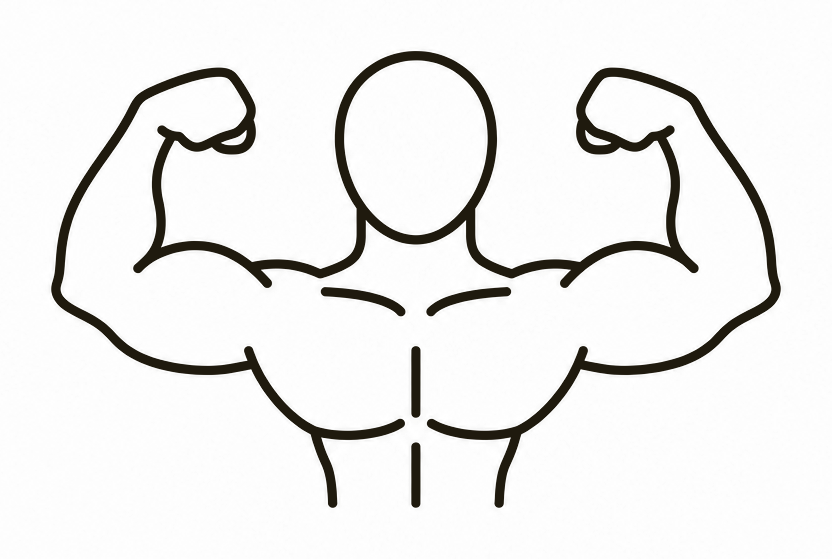
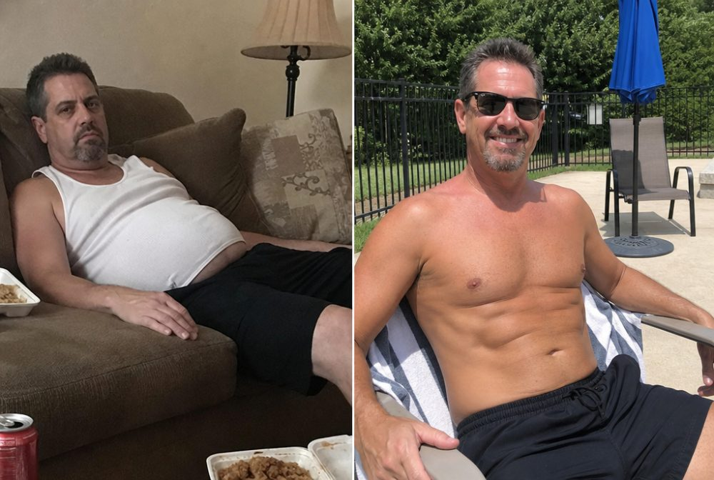

“I Went from Exhausted and Soft to Waking Up Hard Every Morning”
(My wife noticed before I even told her.) ...I thought I was just getting old. My doctor said my labs were "normal." But I felt like garbage. Then I discovered the 5 organs men ate for 200,000 years and everything changed. 25 lbs of fat gone. Energy all day. Morning wood like I’m 25 again.
No Other Food on Earth Can Transform Men Like Grass-Fed Organ Meat
99% of supplements fail because they're missing this, and you'll waste money forever chasing results that never come.

"I'm 50 years old and honestly thought my best years were behind me. My energy was gone. I couldn't get morning wood without serious effort. Then I tried MOFO. Within a week I felt like I was 30 again. My wife asked what I was doing differently before I even told her."
Try MOFO risk-free for 30 days. If your energy doesn't explode, if morning wood doesn't return, if you don't feel like yourself again, we refund every penny. No questions asked.
Transformation to Expect When You Stop Starving Your Body
Giving your body the nutrients it's been missing for decades will cause a total transformation

"Within 24 hours I noticed a difference. My energy was steady. My focus was sharp. I felt like I’d been running on fumes my whole life."

"One week in and I could see changes in the mirror. My workouts felt effortless. It’s like my body remembered how to be strong again."

"After one month my wife keeps saying I’m different. In the best way. I’m stronger, leaner, more confident. I added 10 lbs of muscle and lost 15 lbs of fat."
MOFO Destroys Other Organ Supplements in Every Metric That Matters



"I have to tell you how much this product has helped me in just the first month alone. I'm so happy I take progress pictures to show the improvement! I struggled with low energy and drive, and I didn't go to the gym, but MOFO is really helping. I felt new motivation and started going to the gym, and when I saw results, I kept going. I also feel like I lose fat and build muscle a LOT faster!"
What's Actually Inside MOFO (And Why Each Organ Matters)
The 5 Organs That Kept Men Strong, Lean, and Sexually Powerful for 200,000 Years
For millennia, when a man killed an animal, he ate the whole animal, not just muscle meat. He ate the organs. Because that's where the real nutrition lives. Here's what each organ does for your body:
New Zealand Cattle Live the Way Nature Intended (US Cattle Are Trapped in Hell)
New Zealand banned feedlots. It's illegal to confine cattle. So cattle roam freely. They eat grass. They live in fresh air. They're never pumped with hormones or antibiotics. Compare that to US feedlots:
- ✗Cattle stand in waste
- ✗Fed grain they can't digest properly
- ✗Given hormones to grow unnaturally fast
- ✗Pumped with antibiotics just to survive
The organs from these two environments aren't even comparable. New Zealand organs are:
- ✓3-5X richer in omega-3s (reduce inflammation, burn fat)
- ✓Loaded with vitamins A, D, K2 (produce testosterone)
- ✓Packed with bioavailable minerals (selenium, zinc, iron)
- ✓Completely free of toxins
US feedlot organs are nutritionally dead and toxic. That's why MOFO only uses New Zealand cattle.
Loaded with CoQ10 (What Your Heart and Testosterone Actually Run On)
CoQ10 is what your heart uses to pump blood. It's also what your mitochondria use to produce energy. And it's what your body uses to make testosterone. Most organ supplements destroy CoQ10 through high-heat drying. MOFO preserves 100% of it through freeze-drying. That's why men report:
- ✓All-day energy (no 3pm crash)
- ✓Better workouts and faster recovery
- ✓Morning wood returning within days
Zero Toxins (The Hidden Problem Killing Other Supplements)
Here's what most companies won't tell you: US cattle are raised near highways, industrial farms, and cities. They're exposed to:
- ✗Heavy metals
- ✗Pesticides
- ✗Micro-plastics
- ✗Environmental pollutants
Their organs absorb all of it. New Zealand cattle roam in one of the most pristine environments on Earth. Far from cities. Far from pollution. Their organs are toxin-free. When you take MOFO, you're not getting a side of heavy metals with your nutrients. You're getting pure, clean organ meat the way nature intended.
Ultra-High in L-Carnitine (The Fat-Burning Compound Most Men Lack)
L-Carnitine's job is simple: it transports fatty acids into your mitochondria, where fat is actually burned for energy. If you don't have enough L-Carnitine, your body can't burn fat efficiently, no matter how hard you diet or train. Most men are severely deficient. Heart from grass-fed cattle is one of the richest sources of L-Carnitine on Earth. MOFO gives you a massive dose with every serving. That's why men report:
- ✓Stubborn belly fat finally melting off
- ✓More energy during workouts
- ✓Faster recovery between sessions
Men 30-55+ Are Getting Robbed of Their Best Years (And No One's Talking About It)
You feel like your best years are slipping away. Your energy is gone by mid-afternoon. Your sex drive is a memory. You look in the mirror and barely recognize yourself. And doctors tell you it's "just aging." That it's normal. It's not normal.
Testosterone in men 30-65 has dropped 50% in just 20 years. Not over centuries. Over two decades. Testosterone controls:
- ●Fat loss and muscle growth
- ●Sex drive and performance
- ●Energy and stamina
- ●Confidence and presence
- ●How you handle stress and pressure
When your testosterone is cut in half, of course you feel like garbage.
The Food System Destroyed Your Health for Profit
Studies prove modern food has lost 80% of its nutrition in the last 50 years. Why? Because the food industry prioritized:
- ✗Longer shelf life over nutrition
- ✗Faster growth over quality
- ✗Profit margins over your health
The result? 2,000 new chemicals are introduced into food every single year. Pesticides. Herbicides. Preservatives. Additives. All to make food look fresher, last longer, and cost less to produce. Meanwhile, the nutrients men need to thrive (B vitamins, vitamin A, zinc, magnesium, CoQ10, iron) have been stripped out.
Your body is starving while you eat three meals a day. And then when you get sick, tired, fat, and weak? The medical system is waiting with pills to "manage your symptoms" and collect profits on your decline.
Here's How to Break Free
For 200,000 years, humans ate organ meat every single day. Not as a "supplement." As food. Liver. Heart. Bone marrow. Kidney. Testicle. These organs have unmatched bioavailability, meaning your body recognizes them instantly and uses them immediately. No conversion needed. No waiting months for results.
The human body evolved over 10,000s of years eating animal nutrition, specifically organs. Your body can utilize everything immediately. Results come fast. All you need to do is take 6 capsules a day with food.
Meet MOFO: The 5 Organs That Built Strong Men for 200,000 Years
Over 170,000 men are reclaiming their 40s, 50s, and beyond. MOFO is grass-fed liver, heart, bone marrow, kidney, and testicle from New Zealand cattle. Freeze-dried to preserve every nutrient. Packed into capsules for convenience.
No synthetic vitamins. No fillers. No hormones. Just the five most nutrient-dense foods on Earth, the same foods warriors thrived on for millennia.
Every Day You Wait Is Another Day of Low Testosterone, Low Energy, and Lost Muscle
Each day you postpone equals more fat, lower drive and energy, and less muscle
Stock sells out every month. Over 170,000 men take MOFO daily and demand keeps growing. If the button below is active, we have stock now. If it's not, we're sold out and you'll be waiting weeks for the next batch. Don't wait.
Top Questions About MOFO
HOW LONG TO SEE RESULTS? +
WHO IS THIS FOR? +
ARE THERE SIDE EFFECTS? +
CAN IT IMPROVE MY GYM PERFORMANCE? +
DOES IT NEED TO BE CYCLED? +
WILL IT SHUT DOWN MY NATURAL TESTOSTERONE LIKE TRT? +
DOES IT COME WITH A GUARANTEE? +
These statements have not been evaluated by the Food and Drug Administration. This product is not intended to diagnose, treat, cure, or prevent any disease. The information provided is for informational purposes only and is not a substitute for individual medical advice. Please consult your doctor before using this product. Individual results may vary.